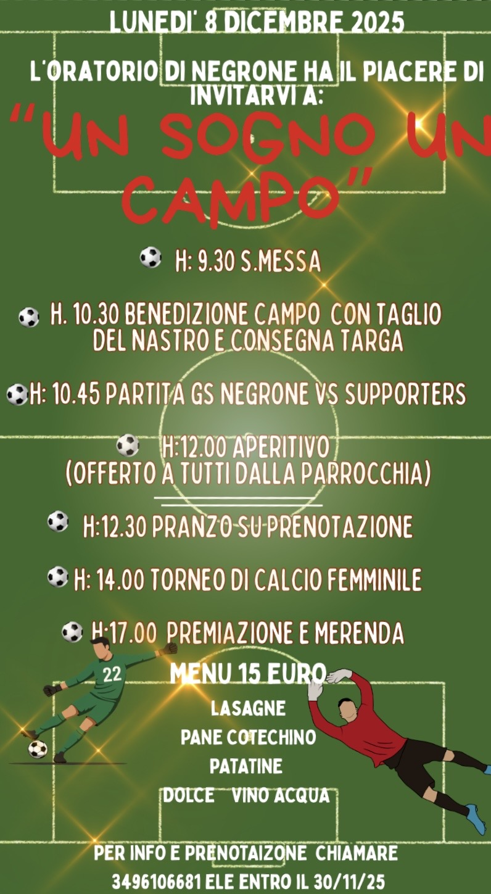

Un sogno, un campo, una comunità
“Il bello è stato pensarlo, la soddisfazione è stata vederlo completato ”

Questo campo da calcio nasce da un’idea semplice ma ambiziosa: creare uno spazio dove lo sport sia passione, crescita e condivisione. Un luogo pensato per accogliere atleti, famiglie e appassionati, dove ogni partita è un’occasione per imparare, migliorare e stare insieme.
Qui il calcio è più di un gioco: è impegno, rispetto delle regole, spirito di squadra e amore per il territorio. Ogni allenamento, ogni gara e ogni momento vissuto su questo campo contribuisce a costruire ricordi, legami e futuro. Il nostro obiettivo è offrire una struttura moderna e accessibile, aperta ai giovani e a chiunque voglia vivere il calcio con entusiasmo e correttezza.
Vuoi prenotare il campo? compila il Form subito